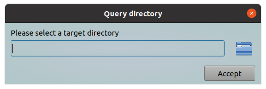
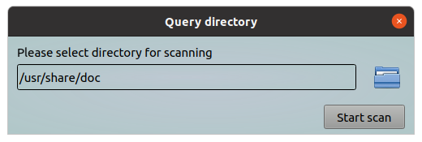
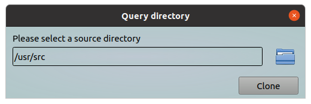
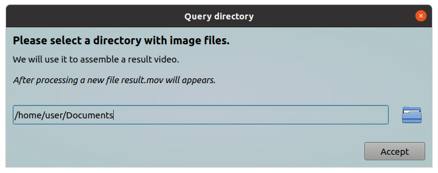

This tool will show a dialog in which you can specify a directory name, or you can use a standard "Open Directory"-dialog to select a directory.
This directory name will returned back to requesting program. Also you can specify a message text to clarify you request for user.
All parameters should be provided via command line.
Options:
| Short | Long | Description |
|---|---|---|
| -h | --help | Will show help and exit |
| -m | --message "Clarifying text" | A text message, it should clarify your request |
| -d | --directory "/base/directory" | A base directory. In this directory initially will open query directory dialog. This parameter can be used to set up a default value |
| -t | --dtitle "New dialog title" | A text string which will show in dialog header |
| -b | --btntext "New btn label" | This text will show onto "Accept" button, i.e. you can rename this button |
| -x | --sizex window_width | This parameter allow you to customize window width (default 500 pixels, minimum 300) |
| -y | --sizey window_height | This parameter allow you to customize window height (default 120 pixels, minimum 120) |
Examples:
Simple query directory
#!/bin/bash
# some actions here
dir_name=$(ytools-query-directory-name --message "Please select a target directory")
echo "You selected the following directory: " ${dir_name}
As a result following window will appear:

In this window you can directly print the path to directory in edit field or you can click on the "Open Directory" picture and use the standard "Open Directory" dialog to choose it.
Query a directory for searching something in it
In this example the "Accept" button will renamed to "Start scan".
#!/bin/bash
# some actions here
dir_name=$(ytools-query-directory-name -m "Please select directory for scanning" --btntext "Start scan")
# Searching *.text files with string "ytools"
for file_name in $(find "${dir_name}" -name "*.text" -print); do
grep -i "ytools" "${file_name}"
done
As a result following window will appear:

Query a directory with source files
In this example we requesting a directory with source files. This files will used as template for creating a new copy with some differences. For example we will change a few word in target files. We will setting up a default directory, in order to make it easier for the user. Accept button will renamed to "Clone".
#!/bin/bash
# some actions here
dir_name=$(ytools-query-directory-name --message "Please select a source directory" --directory "/usr/src" --btntext "Clone" )
# Creating a clone
new_dir_name=$( dirname "${dir_name}" )"/clone"
cp --recursive "${dir_name}" "${new_dir_name}"
cd "${new_dir_name}"
# Changing *.cpp files
for file_name in $(find . -type f -print); do
file_ext="${file_name##*.}"
if [ "${file_ext,,}" == "cpp" ]; then
sed -i 's/old_class_name/new_class_name/g' "${file_name}"
fi
done
As a result following window will appear:

Advanced using
In this example we are using HTML markup language to improve out text request. Also we changing window size for better view and setting up default directory to "${HOME}/Documents"
#!/bin/bash
# some actions here
dir_name=$(ytools-query-directory-name -x 700 -y 230 --message "<h3>Please select a directory with image files.</h3>We will use it to assemble a result video.<br><br><i>After processing a new file result.mov will appears.</i>" --directory "${HOME}/Documents")
echo "You selected the following directory: " ${dir_name}
# Creating video
cd "${dir_name}"
ffmpeg -r 30 -i "%07d.png" -pix_fmt argb -vcodec qtrle result.mov
As a result following window will appear:

Show help
This command will show a help message.
ytools-query-directory-name --help
As a result following information will shown:
*** query-directory-name - a simple program which allow you to use query dialog for select a directory name. *** Usage: ./query-directory-name [options] -h, --help Display this help and exit. -m, --message "Clarifying text" Text string which will show in dialog (default "Please select a directory"). Please use it for clarifying you request. You can use HTML markup language for better view. -d, --directory "/base/directory" In this directory initially will open query directory dialog. This parameter can be used to set up a default value. -t, --dtitle "New dialog title" This text will show in dialog header (default "Query directory"). -b, --btntext "New btn label" Accept button will labeled with this text (default "Accept"). -x, --sizex window_width This parameter allow you to customize window width (default 500 pixels, minimum 300). -y, --sizey window_height This parameter allow you to customize window height (default 120 pixels, minimum 120).